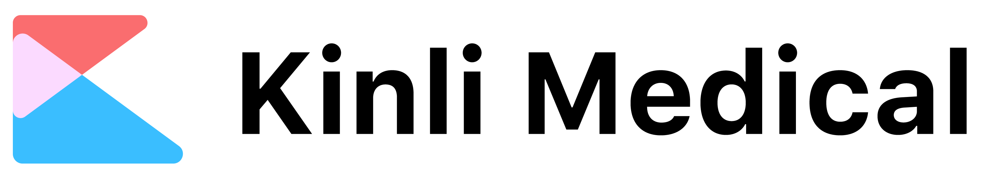

<nav class="navbar navbar-expand-lg fixed-top">
  <a class="navbar-brand d-flex" [routerLink]="['/home']"></a>
  <button class="navbar-toggler" type="button" data-toggle="collapse" data-target="#navbarNav" aria-controls="navbarNav" aria-expanded="false" aria-label="Toggle navigation">
    <span class="navbar-toggler-icon d-flex"><i class="material-icons align-self-center" style="font-size:2em;color:white;">menu</i></span>
  </button>
  <div class="collapse navbar-collapse" id="navbarNav">
    <ul class="navbar-nav ml-auto">
      <li class="nav-item">
        <a class="nav-link" [routerLink]="['./bio-basin']" [ngClass]="{'nav-tab-selected' : router.url === '/bio-basin'}">BIOBASIN</a>
        <div class="border-lie"></div>
      </li>
      <li class="nav-item">
        <a class="nav-link" [routerLink]="['./contact']" [ngClass]="{'nav-tab-selected' : router.url === '/contact'}">CONTACT</a>
      </li>
      <li class="nav-item">
        <a class="nav-link" [routerLink]="['./bio-basin-2']">PURCHASE</a>
      </li>
     
      <li class="nav-item d-flex">
        <a class="nav-link  align-self-center"></a>
      </li>
      <li></li>
    </ul>
  </div>
</nav>